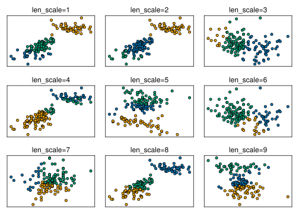
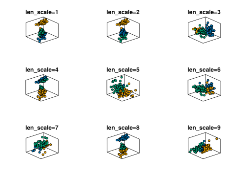

using CSV,DataFrames,Tidier,Pipe
using CairoMakie,AlgebraOfGraphics,MakieThemes
using MLJ,MLJModelInterface,Random
import MLJ:transform,predict
using LinearAlgebra
#Makie.set_theme!(ggthemr(:flat))2 IRIS KernnelPCA-Kmeans clustering
info
using kernel methods mapping dataset to feature space
1. load package
2. load csv
df=CSV.File("../../data/iris.csv")|>DataFrame
df=@chain df begin
@clean_names
end;3. data processing
coerce!(df,:labels=>Multiclass)
ytrain, Xtrain= unpack(df, ==(:species), rng=123)
cat=levels(ytrain)
rows,cols=size(Xtrain)(150, 4)4. MLJ workflow
4.1 load model
using KernelPCA from MultivariateStats.jl package
KernelPCA
@doc(KernelPCA)KernelPCAA model type for constructing a kernel prinicipal component analysis model, based on unknown.jl, and implementing the MLJ model interface.
From MLJ, the type can be imported using
KernelPCA = @load KernelPCA pkg=unknownDo model = KernelPCA() to construct an instance with default hyper-parameters. Provide keyword arguments to override hyper-parameter defaults, as in KernelPCA(maxoutdim=...).
In kernel PCA the linear operations of ordinary principal component analysis are performed in a reproducing Hilbert space.
Training data
In MLJ or MLJBase, bind an instance model to data with
mach = machine(model, X)Here:
Xis any table of input features (eg, aDataFrame) whose columns are of scitypeContinuous; check column scitypes withschema(X).
Train the machine using fit!(mach, rows=...).
Hyper-parameters
maxoutdim=0: Controls the the dimension (number of columns) of the output,outdim. Specifically,outdim = min(n, indim, maxoutdim), wherenis the number of observations andindimthe input dimension.kernel::Function=(x,y)->x'y: The kernel function, takes in 2 vector arguments x and y, returns a scalar value. Defaults to the dot product ofxandy.solver::Symbol=:eig: solver to use for the eigenvalues, one of:eig(default, usesLinearAlgebra.eigen),:eigs(usesArpack.eigs).inverse::Bool=true: perform calculations needed for inverse transformbeta::Real=1.0: strength of the ridge regression that learns the inverse transform when inverse is true.tol::Real=0.0: Convergence tolerance for eigenvalue solver.maxiter::Int=300: maximum number of iterations for eigenvalue solver.
Operations
transform(mach, Xnew): Return a lower dimensional projection of the inputXnew, which should have the same scitype asXabove.inverse_transform(mach, Xsmall): For a dimension-reduced tableXsmall, such as returned bytransform, reconstruct a table, having same the number of columns as the original training dataX, that transforms toXsmall. Mathematically,inverse_transformis a right-inverse for the PCA projection map, whose image is orthogonal to the kernel of that map. In particular, ifXsmall = transform(mach, Xnew), theninverse_transform(Xsmall)is only an approximation toXnew.
Fitted parameters
The fields of fitted_params(mach) are:
projection: Returns the projection matrix, which has size(indim, outdim), whereindimandoutdimare the number of features of the input and ouput respectively.
Report
The fields of report(mach) are:
indim: Dimension (number of columns) of the training data and new data to be transformed.outdim: Dimension of transformed data.principalvars: The variance of the principal components.
Examples
using MLJ
using LinearAlgebra
KernelPCA = @load KernelPCA pkg=MultivariateStats
X, y = @load_iris # a table and a vector
function rbf_kernel(length_scale)
return (x,y) -> norm(x-y)^2 / ((2 * length_scale)^2)
end
model = KernelPCA(maxoutdim=2, kernel=rbf_kernel(1))
mach = machine(model, X) |> fit!
Xproj = transform(mach, X)See also PCA, ICA, FactorAnalysis, PPCA
KernelPCA = @load KernelPCA pkg=MultivariateStats
KMeans = @load KMeans pkg=Clusteringimport MLJMultivariateStatsInterface ✔
import MLJClusteringInterface ✔[ Info: For silent loading, specify `verbosity=0`.
[ Info: For silent loading, specify `verbosity=0`. MLJClusteringInterface.KMeans4.2 defin rbs function
change params length_scale
function rbf_kernel(length_scale)
return (x,y) -> norm(x-y)^2 / ((2 * length_scale)^2)
endrbf_kernel (generic function with 1 method)4.3 define tunning function
function tune(i)
model1 = KernelPCA(maxoutdim=3, kernel=rbf_kernel(i))
mach1 = machine(model1, Xtrain) |> fit!
model2 = KMeans(k=3)
Xproj = MLJ.transform(mach1, Xtrain)
mach2 = machine(model2, Xproj) |> fit!
yhat = MLJ.predict(mach2, Xproj)
return i,Xproj,yhat
endtune (generic function with 1 method)length_scales=1:9
yhat_arr=[tune(i) for i in length_scales];[ Info: Training machine(KernelPCA(maxoutdim = 3, …), …).
[ Info: Training machine(KMeans(k = 3, …), …).
[ Info: Training machine(KernelPCA(maxoutdim = 3, …), …).
[ Info: Training machine(KMeans(k = 3, …), …).
[ Info: Training machine(KernelPCA(maxoutdim = 3, …), …).
[ Info: Training machine(KMeans(k = 3, …), …).
[ Info: Training machine(KernelPCA(maxoutdim = 3, …), …).
[ Info: Training machine(KMeans(k = 3, …), …).
[ Info: Training machine(KernelPCA(maxoutdim = 3, …), …).
[ Info: Training machine(KMeans(k = 3, …), …).
[ Info: Training machine(KernelPCA(maxoutdim = 3, …), …).
[ Info: Training machine(KMeans(k = 3, …), …).
[ Info: Training machine(KernelPCA(maxoutdim = 3, …), …).
[ Info: Training machine(KMeans(k = 3, …), …).
[ Info: Training machine(KernelPCA(maxoutdim = 3, …), …).
[ Info: Training machine(KMeans(k = 3, …), …).
[ Info: Training machine(KernelPCA(maxoutdim = 3, …), …).
[ Info: Training machine(KMeans(k = 3, …), …).5 plot results
5.1 two pcs
fig=Figure()
for i in length_scales
ls,df,label=yhat_arr[i]
row,col=fldmod1(i,3)
ax=Axis(fig[row,col],subtitle="len_scale=$(ls)")
table=(pc1=df.x1,pc2=df.x2,label=label)
datalayer=data(table)
maplayer=mapping(:pc1,:pc2,color=:label)
vislayer=visual(Scatter,markersize=8,strokewidth=1,strokecolor=:black)
plt=datalayer*maplayer*vislayer
hidedecorations!(ax)
draw!(ax, plt)
end
fig
fig=Figure()
for i in length_scales
ls,df,label=yhat_arr[i]
row,col=fldmod1(i,3)
ax=Axis3(fig[row,col],title="len_scale=$(ls)")
table=(pc1=df.x1,pc2=df.x2,pc3=df.x3,label=label)
datalayer=data(table)
maplayer=mapping(:pc1,:pc2,:pc3,color=:label)
vislayer=visual(Scatter,markersize=8,strokewidth=1,strokecolor=:black)
plt=datalayer*maplayer*vislayer
hidedecorations!(ax)
draw!(ax, plt)
end
fig